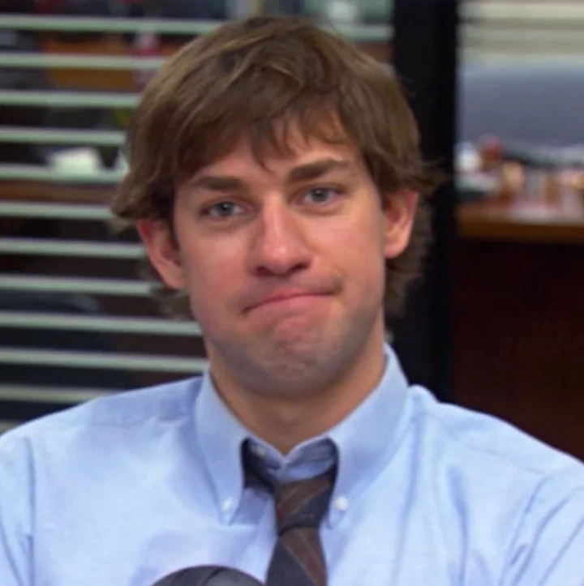
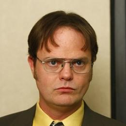

Personagens de The Office
Michael Scott
O gerente regional. É infantil, carente de atenção
e faz piadas inapropriadas, mas tenta (à sua maneira) ser amigo de
todos e cuidar de seus funcionários
Jim Halpert

Vendedor carismático e brincalhão.
Passa boa parte do tempo fazendo pegadinhas com Dwight
e é apaixonado por Pam.
Dwight Schrute

O assistente do gerente regional (e autoproclamado "gerente assistente")
. É obcecado por regras, artes marciais, cultivo de beterraba
e ficção científica, além de levar o trabalho a um
nível extremo de seriedade